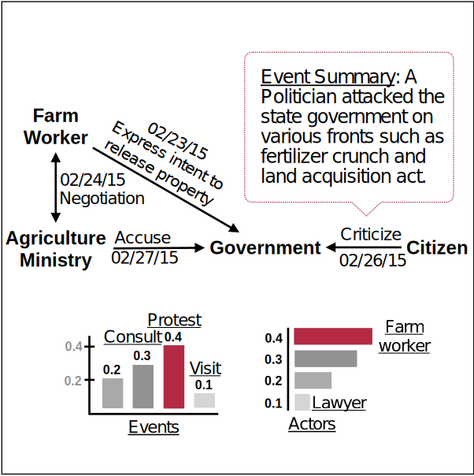

Research Interests
- Machine Learning and Deep Learning
- Graph Neural Networks
- Multi-Task Learning & Transfer Learning
- Interpretable Models
- Text Mining and Knowledge Discovery
- Information Reciprocity
- Multi-Source Data Mining
Current Projects
|
Deep Graph Learning We design new graph neural networks for dynamic and heterogeneous graph data [KDD 19, KDD 20]; We also work on continual graph learning when tasks/data distributions change over time; We focus on novel solutions for knowledge graph reasoning, graph fusion, and temporal graph predictions. We study causality enhanced machine learning to improve interpretability [ICDM 22, KDD 22]. |
|
|
Transfer Learning, Multitask Learning, and Federated Learning We design new transfer learning and multitask learning methods for domain adaptation and bias-mitigation [ICWSM 20]. We also develop multitask learning for imbalanced data and spatiotemporal prediction problems [SDM 18]. We investigate federated learning frameworks for asynchronous settings [BigData 20] and heterogeneous data. |
|
|
Machine Learning for Healthcare We utilize health data to develop new machine learning algorithms for personalized care [AAAI 22] and epidemic forecasting [CIKM 20]. We design new domain knowledge guided deep learning models [IJCAI 21] to discover patient-disease relations, hidden disease patterns, and disease topographies. We focus on tasks such as future risk assessment, ICD coding, medical representation learning, and information retrieval. |
|
|  |
Machine Learning for Social Science We design deep neural networks for societal event predictions including crime, political events, and pandemics. We study new methods for integrating multimodal data [CIKM 21] and causal inference [ICDM 22, KDD 22] in human event analysis. |
|
Socially Responsible AI We are interested in developing efficient and effective detection approaches for socially responsible AI which includes knowledge-based fake news detection [PAKDD 21], fairness in finance [TheWebConf 20], medicine [eBioMedicine], and social networks [ICWSM 22a], and toxic/hate speech detection[ICWSM 20, ICWSM 22b]. |
Previous Projects
- Societal Event Detection and Forecasting in Large-scale Media
- Content and Interaction Analysis of Online Media
- Personalization and User Modeling
Tutorials
- Spatio-Temporal Event Forecasting and Precursor Identification at SIGKDD 2019.
- Explainable AI for Societal Event Predictions: Foundations, Methods, and Applications at AAAI 2021.
Grants
- NSF CRII: Learning Dynamic Graph-based Precursors for Event Modeling
- NSF CAREER: Towards Deep Interpretable Predictions for Multi-Scope Temporal Events